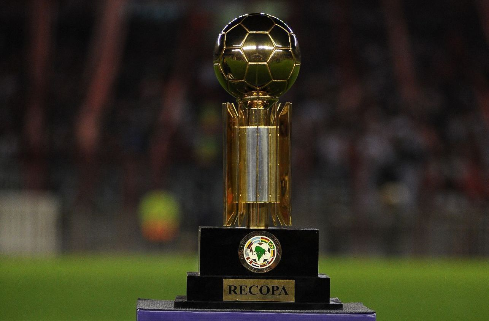
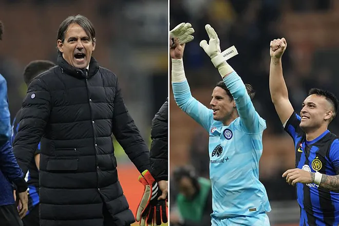

bienvenida
Hola, Bienvenidos a MataCenteno tu sitio web del fútbol
mundial.
Espero que tu visita a ésta plataforma sea de lo más
placentera y
quiero que sepas que siempre seras bienvenido
#7FFFD4

Noticias
Fluminense campeon de la Recopa Sudamericana 2024
El Inter invencible en este 2024

Liverpool lleno de lesionados hace milagros

El Paris no paso del empate contra el Monaco

Partidos para la semana del 13 y 14/02/2024 y
semana del 20 y 21/02/2024
Resultados de partidos de ida del Martes 13/02:
- RB Leipzig 0 vs Real Madrid CF 1
- FC Copenhague 1 vs Manchester City FC 3
Resultados de los partidos de ida del Miercoles 14/02:
- Lazio 1 vs Bayern Munich 0
- PSG FC 2 vs Real Sociedad 0
Resultados de los partidos de ida de octavos del martes 20/02/2024:
- PSV Eindhoven 1 vs Borussia Dortmund 1
- Inter Milan 1 vs Atletico de Madrid 0
Resultados de los partidos de ida de octavos del miercoles 21/02/2024:
- SSC Napoles 1 vs FC Barcelona 1
- FC Oporto 1 vs Arsenal 0
Resulatdos de los partidos de vuelta de octavos de final para el martes 05/03/2024
- Bayern Munich 3 vs 0 Lazio
- Real Sociedad 1 vs 2 PSG
Partidos de vuelta de octavos de final para el miercoles 06/03/2024
- Real Madrid CF vs RB Leipzig 16:00 hora venezolana
- Manchester City FC vs FC Copenhague 16:00 hora venezolana
Partido de Champions del martes 05/03/2024:
Real Sociedad vs PSG. El Paris se vio superior durante todo el partido, ya que ganaba en las disputas de balon y se sentia la superioridad individual de los jugadores parisinos. A los 15 del primer tiempo una genialidad de Mbappe colocando un disparo en una esquina de la arqueria, era el 1 a 0 para el PSG. Luego en el segundo tiempo, a pase de Lee, Mbappe quedo solo contra el portero y de nuevo el frances definio muy bien y era el 2 a 0. La Real Sociedad en el segundo tiempo hizo unos cambios que le dieron mas dinamica al equipo y Merino con un tremendo chute ponia el 2 a 1 final del encuentro. 4 a 1 en el global. El Paris por momentos se veia comodo, con un vitinha jugando su mejor partido desde que esta en el PSG Y Mbappe haciendo de las suyas en el area contraria. Todo le salio bien a Luis Enrique, que hubo algo que no entendi y es que puso a Dembele en el centro del campo, no entendi ese movimiento, es mas el frances se sintio tan incomodo en ese puesto que se gano una amarilla y erro mas de un pase. Todo un desacierto por parte del DT español
Partido de Champions del miercoles 21/02/2024:
El dia de hoy, miercoles 21/02 se jugo el Napoles vs Barcelona y les puedo
decir que dejo mucho que desear, en el papel este tenia que haber sido el
mejor partido de Champions de octavos de esta semana y estuvo muy lejos de
serlo. Comienza el partido y el primer tiempo fue algo aburrido, ya que un
Barcelona con pocas ideas en ataque y un Napoles sumiso y que no presionaba
la salida del rival. Ya en el segundo tiempo, mejoraron un poco las cosas:
El Barcelona se iba al ataque y con un pase de Pedri, Lewandowski anota el
primer gol del encuentro para el equipo catalan; pero el Napoles no se quedo
atras y con algunos cambios de jugadores en el medio campo llegaron al empate
por medio de las piernas de Ohsimen que despues de un pase de Anguisa dispara
con direccion a la esquina de la arqueria rival y anota. El Napoles entro en
confianza y con la juventud en el medio campo de Traore y en la delantera con
Gio Simeone trataban de irse arriba en el marcador pero no fue suficiente.
El Barcelona termino el partido viniendose a menos y un Napoles con entusiasmo
Europa League
En este mes de febrero se jugaran los partidos de play offs, donde
se enfrentaran los 8 equipos que quedaron de subcampeones de cada
grupo de la fase de grupos de esta competicion contra los 8
equipos que quedaron terceros en la fase de grupos de la Champions
de esta temporada
Como goleador de la competicion tenemos a Joao Pedro del Brighton
con 6 goles y como mejor asistidor a Kostas Fortounis del Olympiakos
con 6 asistencias
Los resultados de los partidos de ida de Play Offs de este jueves 15/02 son los siguientes:
- FC Shakhtar Donetsk 2 vs Olympique Marsella 2
- Young Boys 1 vs Sporting Portugal 3
- Galatasary SK 3 vs AC Sparta Praga 2
- Feyenoord Rotterdam 1 vs AS Roma 1
- SC Braga 2 vs Qarabag FK 4
- AC Milan 3 vs FC Stade Rennes 0
- RC Lens 0 vs SC Friburgo 0
- Benfica 2 vs Toulouse FC 1
Resultados de los partidos de Playoffs del jueves 22/02
- Qarabag FK 2 vs SC Braga 3
- SC Friburgo 3 vs RC Lens 2
- Toulouse FC 0 vs Benfica 0
- FC Stade Rennes 3 vs AC Milan 2
- Olympique Marsella 3 vs FC Shakhtar Donetsk 1
- Sporting Portugal 1 vs Young Boys 1
- AC Sparta Praga 4 vs Galatasary SK 1
- AS Roma 1 (4) vs Feyenoord Rotterdam 1 (2)
Total de equipos que van a octavos en la Europa League:
- Westham, Brighton, Rangers, Atalanta, Liverpool, Villarreal, Slavia Praga, Bayern Leverkusen
- Milan, Friburgo, Benfica, Qarabaq, Marsella, Sporting CP, Sparta de Praga, Roma
Fecha de sorteo de los octavos de final de la Europa League:
El sorteo para octavos de final de esta temporada sera este viernes 23/02 en Suiza
aproximadamente a las 7:00 de la mañana hora venezolana
Partidos de octavos de final de la Europa League 23/24 de este jueves 07/03/2024:
- SP Portugal vs Atalanta 13:45 hora venezolana
- FK Qarabag vs Bayern Leverkusen 13:45 hora venezolana
- Roma vs Brighton 13:45 hora venezolana
- S. Praga vs Liverpool 13:45 hora venezolana
- Benfica vs Rangers 16:00 hora venezolana
- Marsella vs Villarreal 16:00 hora venezolana
- Milan vs Slavia P. 16:00 hora venezolana
- Friburgo vs West Ham 16:00 hora venezolana
Opinion
Valencia Real Madrid, partido por la fecha 27 de la liga de España. Se jugo el sabado en Mestalla. Desde el comienzo se sabia que iba a ser un partido polemico por lo sucedido con Vinicius la ultima vez que el Madrid visito este estadio y, si si trajo mucha polemica Se veia desde el comienzo que en el partido iba a ver entradas fuertes y tarjetas rojas, ya que el partido se jugo con una intensidad barbara. El Valencia comenzo presionando al Madrid en salida y logro dos goles tempraneros, uno de Hugo Duro y el otro de yaremchuk, Valencia se iba arriba en el marcador 2 goles a 0. Pero el Madrid no se le puede dar por muerto y comenzo a atacar al Valencia y Vinicius hizo dos goles del Madrid, 2 a 2 se ponia el partido con la entrada de Luka Modric y Brahim Diaz desde antes del gol del empate, le dio frescura en el ataque al Madrid. En el minuto 90 del partido Nacho le hizo falta a Hugo Duro en el area y el arbitro señalo el penal, pero el Var metio su mano e hizo que el principal cambiara de desicion y anulo el penal. Bien, era el minuto 91 de los 7 minutos de alargue que dio Gil Manzano y tanto el Madrid como el Valencia tenian oportunidades hasta que llego lo inpensable tchouameni se cayo encima de Diakhaby fracturandole la pierna al jugador valenciano y por las caras de los jugadores, tanto del Madrid como del Valencia, fue feo el accidente. Se reanudaba el partido y el Madrid siguio atacando hasta que era el minuto 98, Diaz centro el balon que fue a dar a la cabeza de Bellingham y este disparo a la arqueria y gol, pero fue anulado ya que el arbitro habia pitado el final del encuentro antes del cabezaso del jugador madrileño. Polemica total, Bellingham se le fue encima al arbitro, como era de esperarse y el principal le saco la tarjeta roja. Los madridistas estaban enardecidos y no era para menos. Tenia tiempo que no veia un partido tan accidentado y bueno, Vinicius no se quedaba atras, cada ves que este tocaba el balon, la aficion valenciana lo abucheaba y el brasileño mostraba con su puño el signo del black power. Que partidazo no tanto en lo futbolistico sino en lo polemico. Va a dar de que hablar por mucho tiempo
Copa Libertadores

Partidos de la fase preliminar para este martes 05/03/2024:
- Nacional vs Palestino 20:30 hora venezolana
Partidos de la fase preliminar para este miercoles 06/03/2024:
- Botafogo vs Bragantino 20:30 hora venezolana
- Sportivo Trinidense vs Colo Colo 20:30 hora venezolana
Partidos de la fase preliminar para este jueves 07/03/2024:
- Always Ready vs Nacional de Uruguay 20:30 hora venezolana
La fase de grupos de la Conmebol Libertadores comenzara en la semana del miercoles 03/04/2024
Sudamericana
Partidos de fase preliminar para este martes 05/03/2024:
- U. Catolica vs Coquimbo Unido 18:00 hora venezolana
- Real Tomayapo vs Wilstermann 18:00 hora venezolana
- Deportivo Garcilaso vs ADT 20:30 hora venezolana
- Carabobo vs Metropolitanos FC 20:30 hora venezolana
- Tolima vs Medellin 22:00 hora venezolana
Partidos de la fase preliminar para este miercoles 06/03/2024:
- Universitario de Vinto vs Nacional Potosi 18:00 hora venezolana
- Everton vs U. La Calera 18:00 hora venezolana
- Dep. Cuenca vs Delfin 20:30 hora venezolana
- Wanderers vs Danubio 20:30 hora venezolana
- Guarani vs Sportivo Luqueño 20:30 hora venezolana
- Alianza Petrolera vs America 22:00 hora venezolana
Partidos de la fase preliminar para este jueves 07/03/2024:
- Racing vs Cerro Largo 18:00 hora venezolana
- Rayo Zuliano vs Dep. La Guaira 18:00 hora venezolana
- Cesar Vallejo vs Sport Huancayo 20:30 hora venezolana
- Sportivo Ameliano vs Olimpia 20:30 hora venezolana
- Tecnico Universitario vs U. Catolica 22:00 hora venezolana
La fase de grupos de la Conmebol Sudamericana 2024 comenzara el 03/04/2024
Partido: Carabobo vs Metropolitanos
Partido de mucha intensidad ya que se jugaba el pase a fase de grupos de la Sudamericana A los 7 minutos del primer tiempo, Metropolitanos se iba arriba 1 a 0 con un golazo de Charlis Ortiz, quien despues de un pase largo burla a los centrales granate y mete el unico gol de Metropolitanos en el partido. Fue muy interrumpido por faltas y fueras de juego y saques de banda pero de mucha intensidad. Carabobo iba ganando protagonismo en el partido hasta que en el segundo tiempo, Graterol coge el balon con las manos para que el Carabobo no anotara y fue expulsado y penal para el granate. 1 a 1 se empataba el encuentro, que a pesar de que Metropolitanos tenia un jugador menos, se fue al ataque y con cambios de ultimo minuto llego a tener sus oportunidades y encerro a los Carabobeños en su area. Luego nos fuimos a los penales, donde Billete, portero de Metropolitanos, atajo el penal de Apaloza, para que el jugador de Metropolitanos metiera el quinto penal y los capitalinos se quedaban con la victoria y van directos a la fase de grupos cuyo sorteo es el lunes 18 de marzo

Partidos
Partidos del viernes 01/03/2024
Hora 15:30 hora venezolana: friburgo vs Bayern Munich
Hora 15:45 hora venezolana: Lazio vs Milan
Hora 16:00 hora venezolana: AS Monaco vs PSG
Hora 19:00 hora venezolana: Monagas vs Estudiantes de Merida
Hora 16:00 hora venezolana:Metropolitanos vs Carabobo
Partidos del Sabado 02/03/2024
Hora 11:00 hora venezolana: Brentfor FC vs Chelsea
Hora 11:00 hora venezolana: Everton vs West ham United
Hora 11:00 hora venezolana: FC Fulham vs Brighton & Hove Albion
Hora 11:00 hora venezolana: Newcastle United vs Wolverhampton Wanderers
Hora 11:00 hora venezolana: Nottingham Forest vs Liverpool
Hora 11:00 hora venezolana: Tottenham Hotspur vs Crystal Palace
Hora 13:30 hora venezolana: Luton Town vs Aston Villa
Hora 9:00 hora venezolana: Sevilla vs Real Sociedad
Hora 16:00 hora venezolana: Valencia vs Real Madrid
Hora 13:00 hora venezolana: AC Monza vs AS Roma
Hora 15:45 hora venezolana: Torino vs Fiorentina
Hora 10:30 hora venezolana: Union Berlin vs Borussia Dortmund
Hora 13:30 hora venezolana: Wolfsburgo vs Stuttgart
Hora 15:00 hora venezolana: UCV vs Zamora
Hora 17:45 hora venezolana: Angostura vs Portuguesa
Hora 20:30 hora venezolana: Inter vs Dep. La Guaira
Partidos del Domingo 03/03/2024
Hora 11:30 hora venezolana: Manchester City vs Manchester United
Hora 11:15 hora venezolana: Atletico de Madrid vs Real Betis
Hora 13:30 hora venezolana: Mallorca vs Girona
Hora 16:00 hora venezolana: Athletic Club vs FC Barcelona
Hora 15:45 hora venezolana: Napoli vs Juventus
Hora 10:30 hora venezolana: Koln vs Bayern Leverkusen
Hora 15:45 hora venezolana: Olympique Lyonnais vs Lens
Hora 16:00 hora venezolana: Caracas vs Deportivo Tachira
Hora 19:00 hora venezolana: Academia Puerto Cabello vs Rayo Zuliano
Partidos del lunes 04/03/2024
Hora 15:45 hora venezolana: Inter de Milan vs Genova
Hora 16:00 hora venezolana: Sheffield United FC vs FC Arsenal
Partidos del martes 27/02/2024
Hora 15:45 hora venezolana: Blackburn Rovers vs Newcastle United
Hora 16:00 hora venezolana: Luton town vs Manchester City
Hora 18:00 hora venezolana: Palestino vs Portuguesa
Hora 16:30 hora venezolana: Real Sociedad vs Mallorca
Hora 15:45 hora venezolana: Olympique Lyonnais vs Estrasburgo
Partidos del miercoles 28/02/2024
Hora 13:00 hora venezolana: Sassuolo vs Napoli
Hora 15:45 hora venezolana: Inter de Milan vs Atalanta
Hora 15:30 hora venezolana: Chelsea vs Leeds United
Hora 15:45 hora venezolana: Wolverhampton Wanderers vs Brighton & Hove Albion FC
Hora 15:45 hora venezolana: Nottingham Forest vs Manchester United
Hora 16:00 hora venezolana: Liverpool vs Southampton
Hora 18:00 hora venezolana: Club Nacional de Football vs Academia Puerto Cabello
Partidos del jueves 29/02/2024
Hora 20:30 hora venezolana: Fluminense vs LDU Quito
Hora 16:30 hora venezolana: Athletic Club vs Atletico de Madrid
Futbolistas del ayer
George Best, nacido en Belfast, Irlanda del Norte, el 22 de mayo de 1946. Ha sido uno de
los mejores jugadores que han pasado por el Manchester United, jugando para este club por
11 temporadas, formando un tridente muy efectivo en la delantera con Denis Law y Bobby
Chartton. Best jugaba como extremo derecho y mediapunta. En el United gano una copa de
Europa, dos Football League First Division, un Balon de Oro, un premio FWA a mejor
futbolista del año entre otros premios.
Despues de jugar en el Manchester, milito por clubes de Irlanda, Escocia, Estados Unidos
y volvio a Inglaterra. Con la seleccion de su pais, jugo 37 partidos y anoto 9 goles y
no tuvo participacion en copas internacionales ya que la seleccion de Irlanda del Norte
no clasificaba.
En 1998, tras culminar su carrera como jugador, fue colaborador del programa Soccer
Saturday de la cadena Sky Sports hasta el 2004, año en donde fue fichado por el
Portsmouth FC para ser entrenador de las divisiones inferiores.
Para el 2005 fallece como resultado de una infeccion pulmonar y trastorno multiorganico
debido a que la vida de Best estuvo llena de muchos excesos con el alcohol.
Por siempre sera recordado por formar parte del equipo del United en ganar la primera
copa de Europa, hoy llamada Champions League para el United y sera recordado por sus
regates y de como los aficionados les gustaba verlo jugar